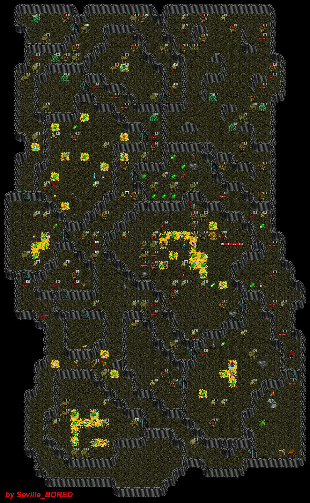

| Northwest Caves -1 | |||||||||||||
 |
|||||||||||||
| Once you come down from Northwest Caves at the surface, you can wander around these lower caves until you find the Kragen Lair. The Kragen is a bit tough but a worthwhile fight. | |||||||||||||
| To Aleria. | |||||||||||||
| To Northwest Caves. | |||||||||||||